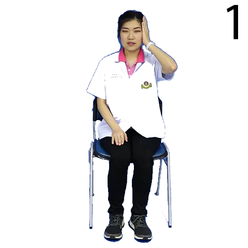
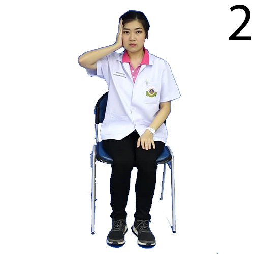
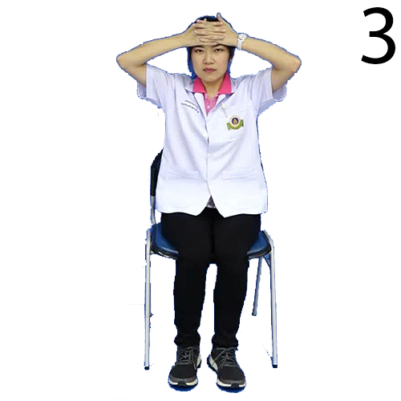
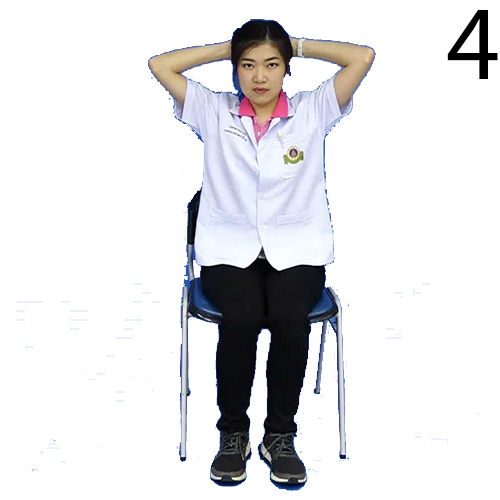

เกร็งคอ
(Isometric neck exercise)
   
1. ทำคอตรง
2. ใช้มือดันที่หน้าผากเบาๆ โดยที่คอไม่ขยับ
3. เกร็งคอ ค้างไว้
10
วินาที แล้วแล้วผ่อนลง
4. ทำซ้ำ
10
ครั้ง
5. จากนั้นทำแบบเดียวกัน โดยใช้มือดันที่ด้านซ้าย ขวา และหลังของศีรษะ
ทำ
3
ครั้ง/วัน
"สแกนโค้ดด้านล่างหรือคลิกเพื่อชมวิดีโอ"